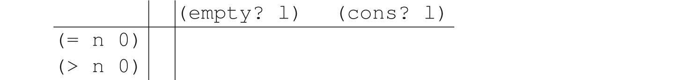
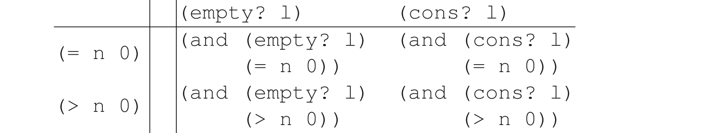
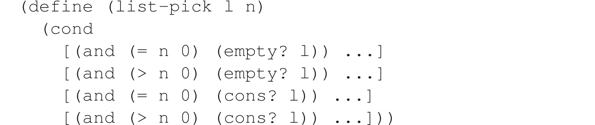
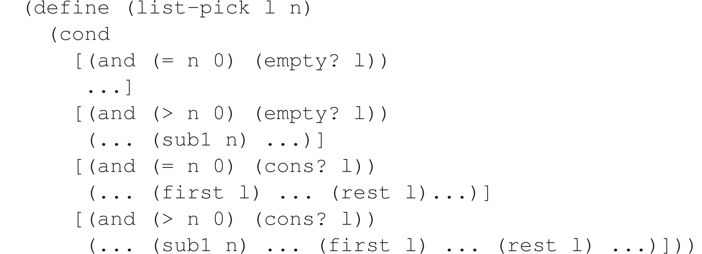

23.3 Processing Two Lists Simultaneously: Case 3
Here is a third type of problem:
Sample Problem Given a list of symbols los and a natural number n, the function list-pick extracts the nth symbol from los; if there is no such symbol, it signals an error.
The question is how well the recipe works for the design of list-pick.
While the data definition for a list of symbols is fairly familiar by now, recall the class of natural numbers from chapter 9.3:
; N is one of:
; -- 0
; -- (add1 N)
Now we can proceed to the second step:
; [List-of Symbol] N -> Symbol
; extracts the nth symbol from l;
; signals an error if there is no such symbol
(define (list-pick l n)
'a)
Both lists of symbols and natural numbers are classes with complex data definitions. This combination makes the problem nonstandard, meaning we must pay attention to every detail for every step of the design recipe.
At this point, we usually pick some input examples and figure out what the desired output is. We start with inputs for which the function has to work flawlessly: '(a b c) and 2. For a list of three symbols and the index 2, list-pick must return a symbol. The question is whether it is 'b or 'c. In grade school, you would have counted 1, 2, and picked 'b without a first thought. But this is computer science, not grade school. Here people start counting from 0, meaning that 'c is an equally appropriate choice. And indeed, this is the choice we use:
(check-expect (list-pick '(a b c) 2) 'c)
Now that we have eliminated this fine point of list-pick, let’s look at the actual problem, the choice of inputs. The goal of the example step is to cover the input space as much as possible. We do so by picking one input per clause in the description of complex forms of data. Here this procedure suggests we pick at least two elements from each class because each data definition has two clauses. We choose '() and (cons 'a '()) for the first argument, and 0 and 3 for the latter. Two choices per argument means four examples total; after all, there is no immediately obvious connection between the two arguments and no restriction in the signature.
As it turns out, only one of these pairings produces a proper result; the remaining ones choose a position that does not exist because the list doesn’t contain enough symbols:
(check-error (list-pick '() 0) "list too short")
(check-expect (list-pick (cons 'a '()) 0) 'a)
(check-error (list-pick '() 3) "list too short")
The function is expected to signal an error, and we pick our favorite message here.
Stop! Put these fragments into DrRacket’s definitions area and run the partial program.
The discussion on examples indicates that there are indeed four independent cases that we must inspect for the design of the function. One way to discover these cases is to arrange the conditions for each of the clauses into a two-dimensional table:

The horizontal dimension of the table lists those questions that list-pick must ask about lists; the vertical dimension lists the questions about natural numbers. By this arrangement, we naturally get four squares, where each represents the case when both the conditions on the horizontal and the vertical axis are true.
Our table suggests that the cond for the function template has four clauses. We can figure out the appropriate condition for each of these clauses by and-ing the horizontal and vertical condition for each box in the table:

The cond outline of the template is merely a translation of this table into a conditional:

As always, the cond expression allows us to distinguish the four possibilities and to focus on each individually as we add selector expressions to each cond clause:

The first argument, l, is a list, and a template’s cond clause for non-empty lists contains two selector expressions. The second argument, n, belongs to N, and the template’s cond clause for non-0 numbers needs only one selector expression. In those cases where either (empty? l) or (= n 0) holds, the respective argument is atomic and there is no need for a corresponding selector expression.
The final step of the template construction demands that we annotate the template with recursions where the results of selector expressions belong to the same class as the inputs. For this first example, we focus on the last cond clause, which contains selector expressions for both arguments. It is, however, unclear how to form the natural recursions. If we disregard the purpose of the function, there are three possible recursions:
1. (list-pick (rest l) (sub1 n))
2. (list-pick l (sub1 n))
3. (list-pick (rest l) n)
Each one represents a feasible combination of the available expressions. Since we cannot know which one matters or whether all three matter, we move on to the next development stage.
Following the design recipe for the fifth step, let’s analyze each cond clause in the template and decide what a proper answer is:
1. If (and (= n 0) (empty? l)) holds, list-pick must pick the first symbol from an empty list, which is impossible. The answer must be an error signal.
2. If (and (> n 0) (empty? l)) holds, list-pick is again asked to pick a symbol from an empty list.
3. If (and (= n 0) (cons? l)) holds, list-pick is supposed to produce the first symbol from l. The selector expression (first l) is the answer.
4. If (and (> n 0) (cons? l)) holds, we must analyze what the available expressions compute. As we have seen, it is a good idea to work through an existing example for this step. We pick a shortened variant of the first example:
(check-expect (list-pick '(a b) 1) 'b)
Here is what the three natural recursions compute with these values:
(a) (list-pick '(b) 0) produces 'b;
(b) (list-pick '(a b) 0) evaluates to 'a, the wrong answer;
(c) and (list-pick '(b) 1) signals an error.
From this, we conclude that (list-pick (rest l) (sub1 n)) computes the desired answer in the last cond clause.
Exercise 390. Design the function tree-pick. The function consumes a tree of symbols and a list of directions:
(define-struct branch [left right])
; A TOS is one of:
; -- Symbol
; -- (make-branch TOS TOS)
; A Direction is one of:
; -- 'left
; -- 'right
; A list of Directions is also called a path
Clearly a Direction tells the function whether to choose the left or the right branch in a nonsymbolic tree. What is the result of the tree-pick function? Don’t forget to formulate a full signature. The function signals an error when given a symbol and a non-empty path.